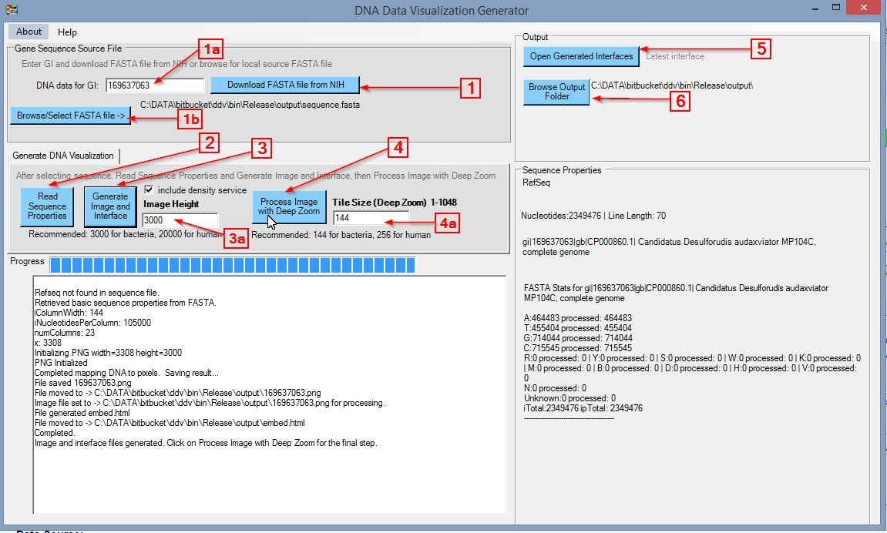
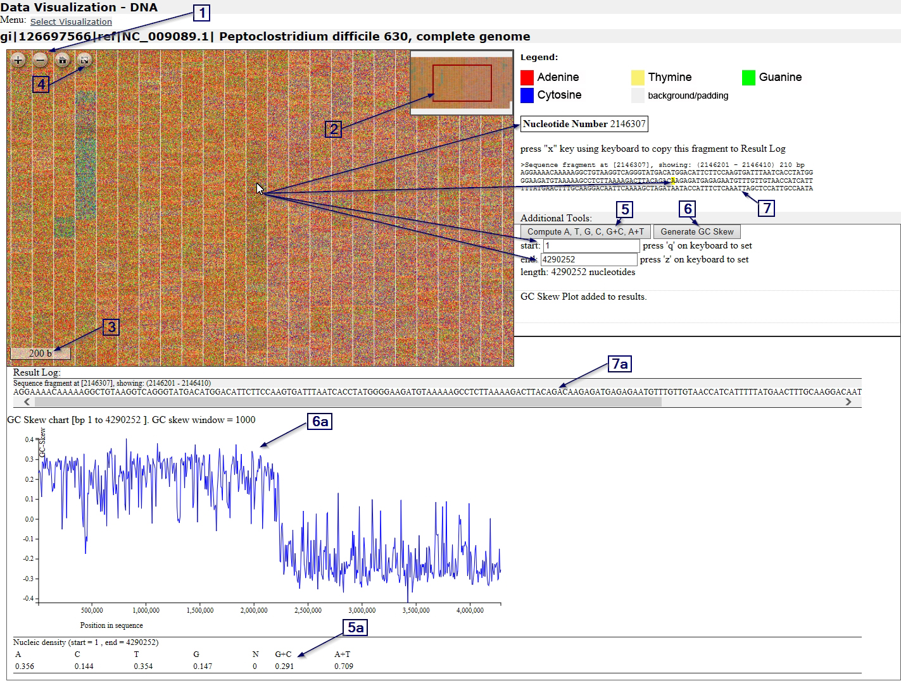

This free open source C# application creates visualizations of FASTA formatted DNA nucleotide data. DDV can download FASTA sequences from NIH, or use local FASTA formatted files. DDV generates interfaces based on OpenSeadragon multiscale visualizations of DNA combined with BioJS data browsing.
The interfaces generated by DDV are constructed with multiscale images, HTML, JavaScript, and PHP. Generating interfaces with DDV requires a Windows operating system (7 or higher). The interfaces generated with DDV can be used on any web browser and operating system.
DDV.zip - Release v1.1 ZIP file at Github
Contains compiled binaries (1.0.6086.32371) for Windows (7 and higher)
DDV generator is intended to run on Windows OS (7 and higher).
Download and unzip the binaries into a local installation folder, for example: C:/DATA/DDV/
DDV requires .NET Framework 4.0 or higher to be installed (see System Requirements below)
Double-click on "DDV.exe" to launch the application
DDV generates output in the /output/ folder under the installation directory, for example: C:/DATA/DDV/output/
The source code for this application is available at Github.
Running DDV generator requires Windows OS (7 and higher)
.NET Framework 4.0 or higher is required. This is included by default in the above versions of Windows.
If you need to install the .NET Framework because your version of Windows does not have it for some reason, the installer is found here:
Note: The DDV zip file includes the msvcr110.dll needed by Civetweb. You may also choose to install it instead with the Visual C++ Redistributable (x86 version, vcredist_x86).
Follow the instructions for Installation/use. When you open DDV.exe, you will see the following interface:

The workflow for generating visualizations consists of 4 steps, activated in order by clicking on the buttons indicated:
The results are placed in the [DDV]/output/ folder. The files in this /output/ folder can also be uploaded to a web server that supports PHP for sharing the generated visualizations with others. You can click on "Browse Output Folder" (6) button to view the generated files with Windows.
The generated interface should open automatically in your browser, with the address "http://localhost:1818/..." You can also click on "Open Generated Interfaces" (5) to view the list of generated visualizations and navigate. Please note that when navigating the visualizations locally, without uploading to a web server, DDV.exe application has to remain open in order for the visualizations to function fully. This is because the DDV application is running Civetweb (a minimal web server) to create the same environment as a PHP-supporting web server. Shutting down DDV also closes Civetweb.
A generated visualization looks like the following:

Navigating the DDV visualizations is accomplished with a combination of mouse (or touchscreen) and keyboard. Zooming in and out is done with the mouse wheel or by clicking on the +/- navigation buttons on the image (1). In addition, there is a button for full-screen (4) and another for "home". The following keys on the keyboard are used to select the beginning and end of a sequence fragment selected for computation (%GC and GC Skew)::
Navigating around the image can be done with the visual navigator in the top right (2), by dragging with the mouse, and/or with the following keys on the keyboard:
The generated visualizations also leverage OpenSeadragon’s scale bar (3). The bar is customized so that it shows the relationship between width on the image and the number of nucleotides, as the user zooms in and out.
The visualization uses a combination of JavaScript and PHP to compute %G+C and nucleic composition density of a selected portion of the visualized sequence, and display the computed results on the interface. Clicking on "Compute A, T, G, C, G+C, A+T" (5) sends the results for the selected sequence (based on the "start" and "end" positions set) to the Result log (5a).
The visualization uses JavaScript for computing GC Skew data and plotting it on the interface using D3.js library. The skew window is set depending on the number of nucleotides in the sequence, ranging from 50 for sequences of less than 100000 nucleotides to 10000 for sequences longer than 10000000 nucleotides. Clicking on "Generate GC Skew" (6) computes the GC Skew graph (based on the "start" and "end" positions set) for the sequence portion selected and places the visualization (6a) in the Result log.
In addition, as you point on the data with the mouse pointer, the currently pointed at nucleotide and its surrounding 210 nucleotides are displayed to the right of the multiscale image (7). The following key is used to copy that fragment to result log (7a):
Click on "x" to copy the currently pointed at sequence fragment to the Result log. This is implemented with the help of BioJS. Please note that this feature is activated only after the sequence is loaded - before the loading is complete, the interface displays information regarding progress.
The software was created by Tomasz Neugebauer (tomasz.neugebauer@concordia.ca), Concordia University Libraries, Concordia University. Collaboration for the biological aspects of the project: Éric Bordeleau; Vincent Burrus and Ryszard Brzezinski; Département de biologie; Faculté des Sciences; Université de Sherbrooke.